유통관리사-3급 (2018-04-15 기출문제)
1과목: 유통상식
1. 청소년보호법 상 청소년유해약물과 가장 거리가 먼 것은?
- 착색 식품첨가물
- 주류
- 담배
- 마약류
- 환각물질
(정답률: 94%)

2. 소매 수레바퀴이론에 대한 내용으로 옳지 않은 것은?
- 새로운 형태의 소매점은 시장진입 초기에 저비용, 저서비스, 저가격으로 시장에 진입한다.
- 경쟁이 격화되면 경쟁적 우위를 확보하기 위해 고비용, 고서비스, 고가격 형태의 운영전략으로 변경한다.
- 편의점의 등장은 소매 수레바퀴이론에 잘 부합되는 특징을 가지고 있다.
- 소매 수레바퀴이론의 쇠퇴기에는 투자수익률이 감소한다.
- 소매 수레바퀴이론의 도입기에는 점포시설이 미비한 편이다.
(정답률: 57%)
3. 다음 글 상자에서 공통으로 설명하는 소매업태는?
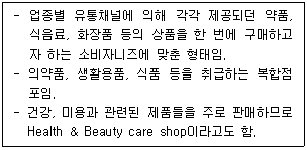
- 편의점
- 하이퍼마켓
- 카테고리 킬러
- 전문할인점
- 드럭스토어
(정답률: 83%)
4. 프랜차이즈 체인방식에 대한 설명으로 옳지 않은 것은?
- 체인본부가 가맹점에게 판매권을 부여하고 경영노하우를 제공하는 방식이다.
- 일반적으로 가맹점은 체인본부에게 가맹가입비와 매출액의 일부를 납부한다.
- 점포수가 많을수록 본사의 고정비가 분산되어 점포당 운영비를 줄일 수 있고 안정적인 수입원을 확보할 수 있다.
- 체인본부가 경영에 관련된 노하우를 제공해주기 때문에 가맹점은 판매에 전념할 수 있다.
- 체인본부가 만들어놓은 사업에 가맹점이 사후적으로 참여하는 것이기 때문에 가맹점이 자율적으로 결정할 수 있는 사항이 너무 많아 체인본부가 약자의 입장에 있다.
(정답률: 92%)
5. 전통적 유통 경로(conventional channel)의 특징으로 옳지 않은 것은?
- 구성원들 간의 법적 구속력이 없다.
- 수직적 유통 경로보다 경로 성과성이 높지만 유연성은 매우 낮다.
- 구성원들 간의 연결이 느슨하고 결속이 약하다.
- 구성원들 간의 업무 조정이 어려워 이해관계가 충돌하였을 때 조정이 어렵다.
- 공통 목표 보다는 구성원 각자 자신의 이익을 추구하는 경향이 강하다.
(정답률: 42%)
6. ( ㉠ ), ( ㉡ )안에 들어갈 용어로 옳은 것은?
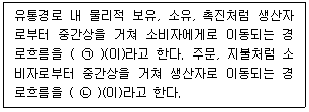
- ㉠ 선택적 유통전략, ㉡ 집중적 유통전략
- ㉠ 전방흐름, ㉡ 후방흐름
- ㉠ 후방흐름, ㉡ 전방흐름
- ㉠ 집중적 유통전략, ㉡ 선택적 유통전략
- ㉠ 물적흐름, ㉡ 상적흐름
(정답률: 71%)
7. 다음 글 상자에서 제시한 소매상 중 무점포소매상으로만 묶인 것은?
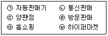
- ㉠, ㉡, ㉢
- ㉠, ㉣, ㉥
- ㉡, ㉣, ㉤, ㉥
- ㉠, ㉡, ㉣, ㉤
- ㉠, ㉢, ㉣, ㉥
(정답률: 83%)
8. 방문판매의 장점에 대한 설명으로 가장 옳지 않은 것은?
- 적극적으로 제품의 우수성을 설명하여 능동적으로 판매할 수 있다.
- 판매원이 직접 판매하는 대면판매로, 고객관계 형성과 강화에 유리하다.
- 상품뿐만 아니라 사용상황에 대한 개인 컨설턴트 역할이 가능하다.
- 점포유지비가 거의 들지 않으므로 고정비 관련 원가를 줄일 수 있다.
- 고객은 판매원을 통해 경쟁사 제품에 대한 세세한 정보를 제공받을 수 있다.
(정답률: 80%)
9. 올바른 직업관으로 옳지 않은 것은?
- 많은 보수를 주는 직업이라고 무조건적으로 선호하지 않는 태도
- 자신의 일을 통하여 사회 기능의 일부를 수행하며 사회에 환원하는 봉사정신을 가지는 태도
- 자신의 일을 통하여 진정한 행복과 만족된 삶을 지향하는 태도
- 직업에 있어서 정규직과 비정규직을 차별하고, 자신이 속한 직업군에 자부심을 가지는 태도
- 평생학습의 의지를 바탕으로 해당 분야의 전문가로 성장하고자 하는 태도
(정답률: 80%)
10. 소매점에서 상품회전율(stock turnover)이 높아질 경우 나타나는 사실과 가장 관련이 없는 것은?
- 회전율이 높아지면 유행에 맞는 적합성이 증가할 수 있다.
- 회전율이 높아지면 시장 확대 기회는 증가할 수 있다.
- 회전율이 높아지면 판매원의 사기는 높아질 수 있다.
- 회전율이 높아지면 영업 경비는 증가할 수 있다.
- 회전율이 높아지면 매출액이 증가할 수 있다.
(정답률: 49%)
11. 소매업태별 핵심 특성을 연결한 것으로 가장 옳지 않은 것은?
- 백화점 - 다양성과 구색을 모두 추구
- 전문점 - 매우 깊은 상품구색과 완전서비스
- 양판점 - 중저가 상품구색의 다품종 판매
- 하이퍼마켓 - 대형화된 수퍼마켓에 할인점을 접목
- 수퍼마켓 - 염가점들을 종합해 놓은 초대형 소매점
(정답률: 64%)
12. 도매상이 수행하는 마케팅믹스 전략에 대한 설명으로 옳지 않은 것은?
- ABC분류에 기초하여 수익성이 높은 제품을 우선 소매상에게 제공한다.
- 일반적으로 가격은 원가중심 가격결정을 사용한다.
- 소매상 판촉보다 대중매체를 통한 광고가 더 효과적이다.
- 점포입지는 소매상에 비해 비교적 저렴한 곳에 하는 것이 좋다.
- 소매상에 비해 사무실이나 물리적 시설에 대한 투자는 최소화해도 좋다.
(정답률: 33%)
13. 대형 할인점(대형마트)에 대한 설명으로 옳지 않은 것은?
- 주로 중저가 브랜드 취급
- 다점포 방식으로 인한 제조업체에 대한 강력한 구매력 보유
- 셀프서비스 판매 방식
- 주로 High/Low 가격전략 구사
- 깊이(depth)보다는 폭(width)위주의 구색전략 추구
(정답률: 49%)
14. 소비자 기본법에서 정하고 있는 소비자의 책무로 옳지 않은 것은?
- 소비자는 자유 시장 경제를 구성하는 주체임을 인식하여 물품 등을 올바르게 선택해야 한다.
- 소비자의 기본적 권리를 정당하게 행사하여야 한다.
- 소비자는 스스로의 권익을 증진하기 위하여 필요한 지식과 정보를 습득하도록 노력하여야 한다.
- 소비자는 자주적이고 합리적인 행동과 더불어 자원을 아끼고 환경 친화적인 소비 생활을 하여야 한다.
- 소비보다는 근검절약하는 생활을 최우선으로 여기고 국민 경제수준 발전에 적극적으로 임하여야 한다.
(정답률: 78%)
15. 소비재 유통경로의 흐름으로 가장 옳은 것은?
- 소매상 → 중간도매상 → 도매상 → 제조업자 → 소비자
- 제조업자 → 중간도매상 → 도매상 → 소매상 → 소비자
- 중간도매상 → 소매상 → 도매상 → 소비자 → 제조업자
- 제조업자 → 도매상 → 중간도매상 → 소매상 → 소비자
- 도매상 → 중간도매상 → 소매상 → 제조업자 → 소비자
(정답률: 82%)
16. 수익률과 회전율에 의한 소매점의 위치를 올바르게 나열한 것은?
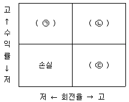
- ㉠ 전문점, ㉡ 편의점, ㉢ 할인점
- ㉠ 할인점, ㉡ 편의점, ㉢ 백화점
- ㉠ 전문점, ㉡ 할인점, ㉢ 편의점
- ㉠ 할인점, ㉡ 양판점, ㉢ 전문점
- ㉠ 전문점, ㉡ 양판점, ㉢ 백화점
(정답률: 55%)
17. 고관여상품과 비교한 저관여상품에 대한 특징으로 옳지 않은 것은?
- 저관여상품은 고관여상품에 비해 물품 구매 빈도가 높은 편이다.
- 저관여상품은 고관여상품에 비해 물품 구매 단가가 높은 편이다.
- 상표간의 차이가 없는 대다수의 생활필수품은 저관여상품에 포함된다.
- 저관여상품은 고관여상품에 비해 습관적 구매가 이루어지는 물품이 많은 편이다.
- 저관여상품은 고관여상품에 비해 충동적 구매가 이루어지는 경향이 있다.
(정답률: 78%)
18. ( ㉠ ), ( ㉡ )안에 들어갈 단어로 옳은 것은?
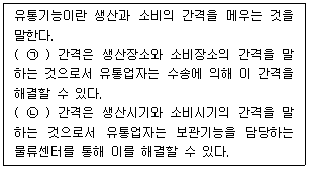
- ㉠ 장소적, ㉡ 시간적
- ㉠ 장소적, ㉡ 수량적
- ㉠ 시간적, ㉡ 장소적
- ㉠ 장소적, ㉡ 품질적
- ㉠ 품질적, ㉡ 시간적
(정답률: 82%)
19. ( ㉠ ), ( ㉡ )안에 들어갈 용어로 옳은 것은?
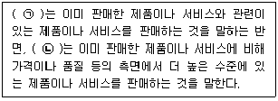
- ㉠ 추가판매, ㉡ 상향판매
- ㉠ 상향판매, ㉡ 추가판매
- ㉠ 교차판매, ㉡ 상향판매
- ㉠ 상향판매, ㉡ 교차판매
- ㉠ 관련판매, ㉡ 고급판매
(정답률: 50%)
20. 인적판매자가 추구해야 하는 역할과 가장 거리가 먼 것은?
- 단순 제품전달자의 역할
- 판매 상담자의 역할
- 서비스제공자의 역할
- 정보전달자의 역할
- 수요창출자의 역할
(정답률: 63%)
2과목: 판매 및 고객관리
21. POP(Point Of Purchase)에 대한 내용으로 옳지 않은 것은?
- 진열시점 후의 광고로서 소비자가 상품을 구매한 후 사용방법을 알려주기 위한 것이 주된 목적이다.
- 상품이 진열된 장소에서 쇼핑고객을 대상으로 하기 때문에 실질적인 상품을 소구한다.
- POP는 연결판매를 통해 객단가를 상승시켜 매출을 증대시키는 효과가 있다.
- 너무 많은 POP는 매장을 산만하게 만들 수 있다.
- 가격정보제공, 행사정보제공 등의 내용을 포함하기도 한다.
(정답률: 70%)
22. 진열에 대해 내용으로 옳은 것은?
- 수퍼마켓의 계산대 앞에는 로스율이 낮은 카테고리 상품을 진열한다.
- 소비자가 더 오랜 시간을 매장에서 보낼 수 있도록 동시구매가 많이 이루어지는 상품군을 분리하여 진열한다.
- 제품에 대한 다양한 정보제공 및 충동구매 빈도를 높이기 위해 POP를 사용하여 상품을 진열한다.
- 고객의 손이 쉽게 닿을 수 없게 하여 더 오래 매장에 있을 수 있도록 상품을 깊이 진열하는 것이 좋다.
- 10대 인구 구성비가 높은 상권의 수퍼마켓에서는 주류, 커피, 차류를 위주로 유연성 있게 적용하여 진열한다.
(정답률: 57%)
23. 이탈고객관리에 대한 설명으로 가장 옳지 않은 것은?
- 고객이탈율은 1년 동안 떠나는 고객의 수를 신규 고객의 수로 나눈 값이다.
- 이탈고객이 제공하는 정보를 활용하여 이탈고객이 발생하지 않도록 노력해야 한다.
- 완전히 이탈한 고객만이 아닌 어느 정도 이용률이 떨어진 고객도 관리해야 한다.
- 고객이탈율 제로문화를 형성하기 위해 노력해야 한다.
- 휴면고객의 정보를 활용하여 고객으로 환원시키도록 노력해야 한다.
(정답률: 62%)
24. ( ㉠ ), ( ㉡ )안에 들어갈 용어로 옳은 것은?
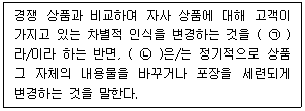
- ㉠ 포지셔닝, ㉡ 리뉴얼
- ㉠ 포지셔닝, ㉡ 스타일 변경
- ㉠ 리포지셔닝, ㉡ 리뉴얼
- ㉠ 재활성화, ㉡ 스타일 변경
- ㉠ 리포지셔닝, ㉡ 상품 믹스
(정답률: 52%)
25. 촉진 전략에는 푸시(push) 전략과 풀(pull) 전략이 있다. 이에 대한 설명으로 옳지 않은 것은?
- 푸시 전략이란 제조업자가 유통업자에게 촉진 활동을 하고 유통업자는 최종소비자에게 마케팅 활동을 하는 전략이다.
- 풀 전략이란 제조업자가 직접 최종소비자에게 광고와 판촉을 통해 촉진 활동을 펼치는 전략이다.
- 푸시 전략은 소비자들이 상품에 대한 관여도가 낮고 충동적인 구매를 하는 경우 적합하다.
- 풀 전략은 소비자들이 상품에 대한 관여도가 높을 때 적합하다.
- 풀 전략은 소비자가 브랜드 선택 없이 방문했을 때 적합하다.
(정답률: 42%)
26. 진실의 순간(moments of truth : MOT)에 대한 설명으로 가장 옳지 않은 것은?
- 고객의 서비스 품질 인식에 결정적 역할을 하기 때문에 결정적 순간으로 불린다.
- 진실의 순간을 관리하기 위해서 조직의 상층부에 권한을 집중하고, 명령계통을 일원화한다.
- 지극히 짧은 순간이지만, 고객의 서비스 인상을 좌우한다.
- 기업의 여러 자원과 고객이 직접 혹은 간접적으로 만나는 순간이며, 고객이 기업의 서비스를 평가하는 순간이다.
- 고객접점에 있는 직원의 동기부여와 고객응대력을 높이는 것이 중요하다.
(정답률: 82%)
27. 고객관계관리의 등장배경 및 필요성에 대한 내용으로 가장 옳지 않은 것은?
- 생산자 위주 시장인 소품종 대량생산에서 구매자 중심의 다품종 소량생산으로 변화되었다.
- 컴퓨터, 정보기술(IT)의 급격한 발전으로 고객데이터를 과학적으로 분석하여 활용할 수 있게 되었다.
- 치열한 시장경쟁으로 고객이 언제든지 경쟁사로 이동이 가능한 환경이 되었다.
- 고객들이 갖고 있는 기대와 욕구가 다양화되었다.
- 차별화되지 않는 메시지를 불특정 다수 고객에게 전달하는 광고는 매우 효과적인 것으로 인식되었다.
(정답률: 69%)
28. 브랜드 및 브랜드 자산의 의미와 중요성에 대한 설명으로 옳지 않은 것은?
- 브랜드란 판매자가 자신이 판매하는 제품이나 서비스를 다른 판매자와 구별하기 위하여 사용하는 이름 · 문자 · 기호 · 도형 · 디자인 또는 이들의 결합 등을 말한다.
- 구매자들에게 강력하고 독특한 브랜드 이미지를 전달하게 되면, 충성 고객 확보와 안정적인 매출 등 기업경영에 좋은 결과를 얻을 수 있다.
- 브랜드가 창출하는 부가가치의 총합을 브랜드 자산 또는 브랜드 파워라고 한다.
- 강력한 브랜드를 보유한 제조업체가 그 브랜드를 활용한 브랜드 확장을 시도하게 되면, 브랜드 확장시 마케팅 비용은 신규 브랜드 출시보다 휠씬 많이 요구된다.
- 브랜드 충성도가 높은 구매자는 다른 제품들을 구입하지 않기 때문에 브랜드 자산은 경쟁우위의 원천이 된다.
(정답률: 70%)
29. 서비스품질을 측정하는 SERVQUAL의 하위 차원으로 옳지 않은 것은?
- 협력성(Cooperativeness)
- 신뢰성(Reliability)
- 확신성(Assurance)
- 유형성(Tangibles)
- 공감성(Empathy)
(정답률: 70%)
30. 마케팅 믹스를 기존 제조업자 관점의 4P에서 소비자관점의 4C로 전환해야 한다는 견해가 있다. 다음 중 4C에 해당하지 않는 것은?
- Cost to customer
- Consumer value
- Customization
- Convenience
- Communication
(정답률: 41%)
31. 선물용 광고물로서 자사의 로고가 새겨진 컵, 펜, 가방 등과 같은 상품형태로, 소비자나 판매자에게 무료로 배포하여 마케팅 효과를 높이려는 판촉 수단은?
- 리펀드(refund)
- 프리미엄(premiums)
- 샘플링(sampling)
- 제품삽입(product placement)
- 리베이트(rebate)
(정답률: 42%)
32. 다음 글상자는 상품을 알고 나서 구입을 결정하기까지 소비자의 심리 적인 과정(AIDMA모형)을 기술한 것이다. 이 과정에 대한 법칙의 내용과 용어를 짝지은 것으로 옳지 않은 것은?
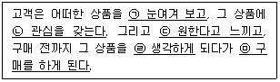
- ㉠-주의(Attention)
- ㉡-관심(Interest)
- ㉢-욕망(Desire)
- ㉣-의미(Meaning)
- ㉤-행동(Action)
(정답률: 83%)
33. 다음의 설명에 해당하는 포장의 기능은?
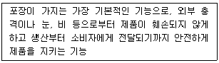
- 상품성
- 보호성
- 편리성
- 심리성
- 배송성
(정답률: 91%)
34. 판매시점 정보관리시스템(POS system)의 장점으로만 묶인 것은?
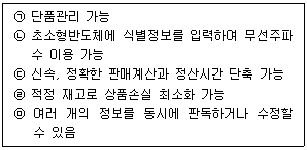
- ㉠, ㉡, ㉤
- ㉡, ㉢, ㉣
- ㉡, ㉣
- ㉠, ㉣, ㉤
- ㉠, ㉢, ㉣
(정답률: 64%)
35. 유럽상품코드에 대한 내용으로 옳지 않은 것은?
- 유럽상품코드는 EAN이라고 한다.
- 유럽상품코드의 표준 자리수는 13자리이다.
- 유럽상품코드의 대한민국 국가코드는 978이다.
- 유럽상품코드의 단축형은 8자리이다.
- 유럽상품코드의 마지막 한자리는 체크숫자로 판독오류방지를 위해 만들어진 것이다.
(정답률: 68%)
36. 서비스의 특성으로 옳지 않은 것은?
- 서비스의 무형성을 극복하기 위해 고객 참여는 필수적이다.
- 서비스는 저장되거나 재판매될 수 없고 돌려받을 수도 없다.
- 서비스는 비분리성을 가지고 있어 생산과 동시에 소비된다.
- 서비스의 이질성으로 인해 표준화 또는 개별화 전략을 시행한다.
- 서비스는 실체를 보거나 만질 수 없다.
(정답률: 35%)
37. 점포를 개점할 때에 고려해야 할 사항으로 옳은 것은?
- 시장잠재력이 낮은 곳에서 출점하여야 경합의 영향도 작아지기 때문에 시장잠재력이 낮은 곳에서 개점하도록 한다.
- 시장이 갖는 잠재력을 충분히 흡수하기 위해 시장잠재력에 맞는 규모와 형태로 개점하도록 한다.
- 점포 개점 시 인지도를 확대하는 전략은 자원을 낭비하는 일이므로 배제한다.
- 미래의 경제상황같이 예측이 불가능한 요인들은 미래사업에 대한 영향이 불확실하므로 사업계획시 고려할 잠재요인에 포함되지 않는다.
- 경쟁력, 자본력 등이 부족한 프랜차이즈의 경우, 시장의 중심부에 점포를 출점한 후 점차 외곽지역으로 영역을 확대하도록 한다.
(정답률: 67%)
38. 판매원으로서 적절한 몸가짐 및 용모관리에 대한 내용으로 가장 옳지 않은 것은?
- 청결하며 단정한 옷차림을 유지한다.
- 뒷주머니에 손을 넣는 행위는 바람직하지 않다.
- 길게 자라있는 코털이나 덥수룩한 수염은 지양한다.
- 짙은 색조화장이나 레이스 스타킹은 적절하지 않다.
- 개인정보 보호를 위해서 판매원 이름이 적힌 명찰은 부착하지 않아야 한다.
(정답률: 86%)
39. 카테고리 수명주기의 변화상 여러 시즌에 걸쳐 특정상품의 판매가 일어나며, 특정 시즌에서 다음 시즌으로 바뀔 때 극적인 판매 변화가 일어나는 상품은?
- 일시성상품
- 유행성상품
- 지속성상품
- 계절성상품
- 소비성상품
(정답률: 78%)
40. 고객과의 전화 응대에 대한 설명으로 옳지 않은 것은?
- 고객의 질문에 성심성의껏 답변한다.
- 설명은 생략하고 결론만 제시하여 빨리 통화를 마무리하는 것이 바람직하다.
- 전화응대는 청각적인 요소만을 이용하기 때문에 더욱 언어표현에 주의하여야 한다.
- 전화응대의 수준으로 회사 전체의 이미지와 서비스의 수준이 좌우될 수 있다는 인식을 해야 한다.
- 자신의 소속과 성명을 먼저 밝히고 회사를 대표한다는 마음으로 응대한다.
(정답률: 91%)
41. 다음 글 상자의 내용에 알맞은 상품연출 구도는?
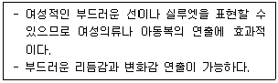
- 부채꼴구성
- 곡선구성
- 원형구성
- 삼각구성
- 반원형구성
(정답률: 65%)
42. 디스플레이를 할 때 일반적으로 따르는 4W1H 원칙에 대한 내용으로 옳지 않은 것은?
- WHEN : 언제 디스플레이를 할 것인가?
- WHO : 누가 디스플레이를 할 것인가?
- WHERE : 어디에 디스플레이를 할 것인가?
- WHAT : 무엇을 디스플레이 할 것인가?
- HOW : 어떠한 방법으로 디스플레이를 할 것인가?
(정답률: 63%)
43. 다음 글 상자에서 설명하는 점포의 배치유형은?
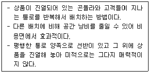
- 격자형 배치
- 자유형 배치
- 부띠끄형 배치
- 경주로형 배치
- 루프배치
(정답률: 47%)
44. 판매원이 갖추어야 할 상품지식에 대한 구체적인 내용으로 옳은 것은?
- 상품의 사용 : 제조회사 역사
- 상품의 재질 : 크기
- 상품의 모양 : 유지비
- 상품의 특성 : 포장
- 상품의 배경 : 아름다움
(정답률: 29%)
45. 점포 레이아웃 설계의 기본 원칙으로 옳지 않은 것은?
- 고객의 편안한 쇼핑을 위해 여유 있는 동선을 확보한다.
- 점포의 생산성을 높일 수 있도록 공간을 설계한다.
- 고객이 점포에 머무르는 시간이 길어질 수 있도록 동선을 설계하는 것이 좋다.
- 고객의 동선과 직원의 동선이 교차하는 지점이 많을수록 좋다.
- 고객 동선과 상품 이동 동선은 서로 교차하지 않도록 구성한다.
(정답률: 66%)